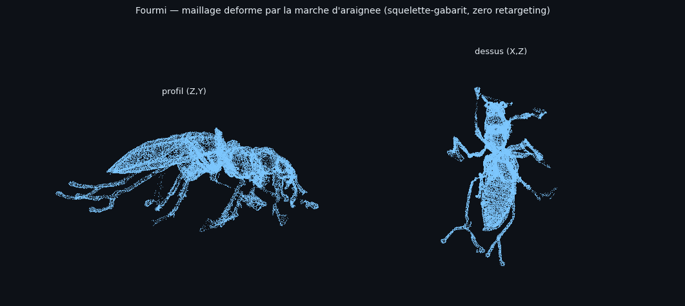
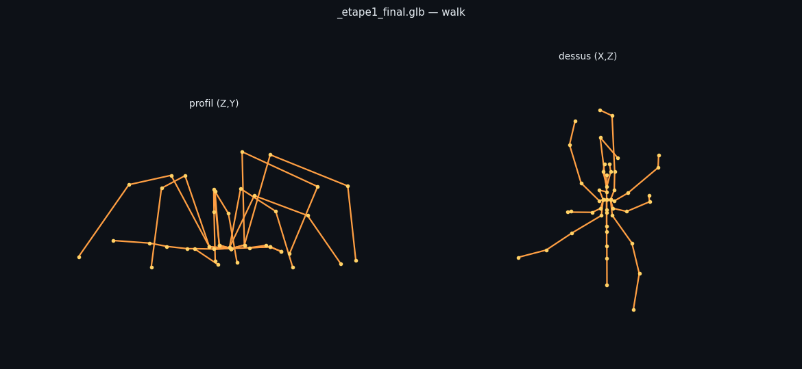

Le rig final porte le vrai gabarit : 56 os, noms d'origine
(root compris), rotations locales d'origine — et le clip « Walk » de
l'araignée est joué sans aucun retargeting : les canaux du clip s'appliquent
tels quels, os par os, par nom.


| Contrôle | Mesure |
|---|---|
| transfert des poids (sortie → gabarit) | écart pire 1,5·10⁻⁸ — exact |
| squelette refit sur les pivots de la fourmi | écart max 2,6·10⁻⁷ |
| canaux du clip apposés | 112, zéro retargeting |
| amplitude du maillage | 25,7 % — sans éclatement (p99 : 17,5 %) |
Conséquence directe : les 9 autres clips de l'araignée (Attack, Jump, Death…) se jouent de la même façon, sans travail supplémentaire — et il en ira de même dans Unreal pour un squelette de pack, puisque le rig est ce squelette.